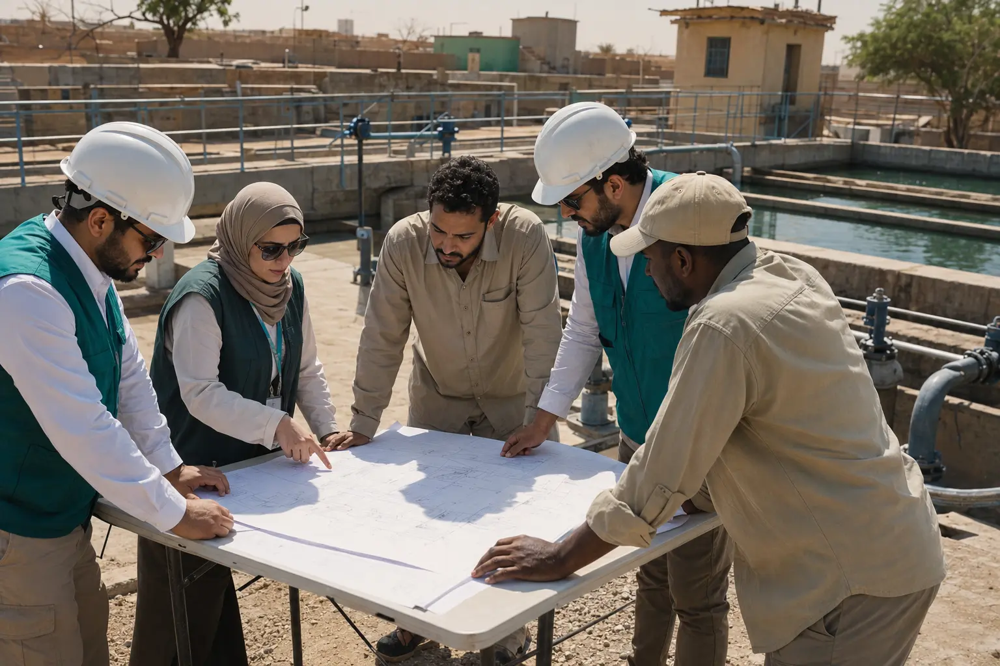
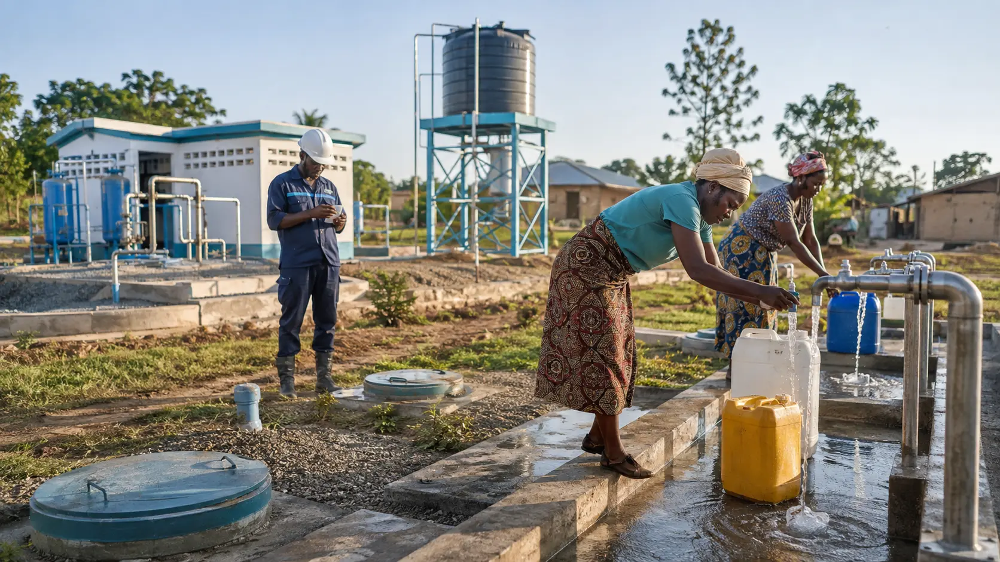
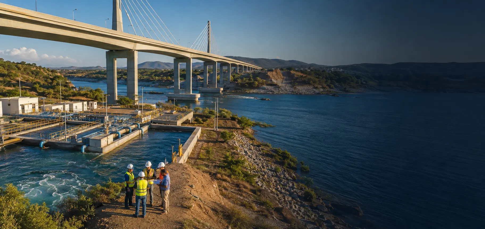

٠
تنمية مستدامة • شراكات عالمية
شركاء في التنمية منذ 1961
يموّل الصندوق الكويتي مشاريع التنمية المستدامة ويقدم القروض والمنح والمساعدات الفنية للدول النامية.
وصول مباشر
خدمات تهمك
روابط واضحة وسريعة لأكثر الخدمات استخدامًا.

1961
مسيرة ممتدة من التعاون التنموي
عن الصندوق
نصنع أثرًا يتجاوز الحدود
يقدم الصندوق الكويتي قروضًا ميسّرة ومنحًا ومساعدات فنية لدعم التنمية في الدول الشريكة، ضمن تعاون مؤسسي يضع الاحتياجات التنموية والاستدامة في صميم العمل.
قروض ميسّرةمنحمساعدات فنية
تعرف على الصندوقالأثر بالأرقام
تنمية تقاس بما تحققه
آخر تحديث: — • قابل للتحديث عبر نظام المحتوى
٠
قرضًا ممنوحًا
د.ك ٠ مليون
إجمالي مبالغ القروض
٠
منحة ومساعدة فنية
د.ك ٠ مليون
مبالغ المنح والمساعدات الفنية
د.ك ٠ مليون
تسديدات القروض
حضور دولي
أثر كويتي حول العالم
يمتد عمل الصندوق عبر الدول العربية، وآسيا والمحيط الهادئ، وأفريقيا، وآسيا الوسطى وأوروبا، وأمريكا اللاتينية والكاريبي، إضافة إلى المؤسسات.
استكشف الدول المستفيدةالنطاق المحددالدول العربية
استكشف المنطقة ضمن بيانات الدول والعمليات المنشورة.
مجالات العمل
أولوياتنا التنموية
قطاعات مترابطة تدعم بنية تنموية أكثر استدامة.

إطلاق مبادرة «المياه من أجل الحياة» بدعم من الصندوق الكويتي
مبادرة تركز على دعم الوصول المستدام إلى المياه الآمنة ضمن أولويات التنمية.
المركز الإعلامي
آخر الأخبار والفعاليات

الصندوق الكويتي يعلن مساهمة شركة إنتغريتد هولدينغ بقيمة 6 ملايين دولار أمريكي في صندوق الكويت للاستجابة للطوارئ
اقرأ الخبرالصندوق الكويتي يبرز مساهماته في مكافحة التصحر وتعزيز الاستدامة البيئية خلال مؤتمر COP17 في منغوليا
اقرأ الخبرالصندوق الكويتي يعلن مساهمة علي الغانم وأولاده للسيارات بقيمة 3 ملايين دولار أمريكي في صندوق الكويت للاستجابة للطوارئ
اقرأ الخبرالفرص
اعمل معنا
مسارات واضحة للموردين والمتدربين والباحثين عن فرص العمل.
المناقصات
اطّلع على فرص التوريد والمناقصات والممارسات الحالية.
برامج التدريب
تابع البرامج والإعلانات والتقييمات المتاحة.
فرص التوظيف
تعرف على الفرص المتاحة للانضمام إلى الصندوق.
المعرفة والإعلام